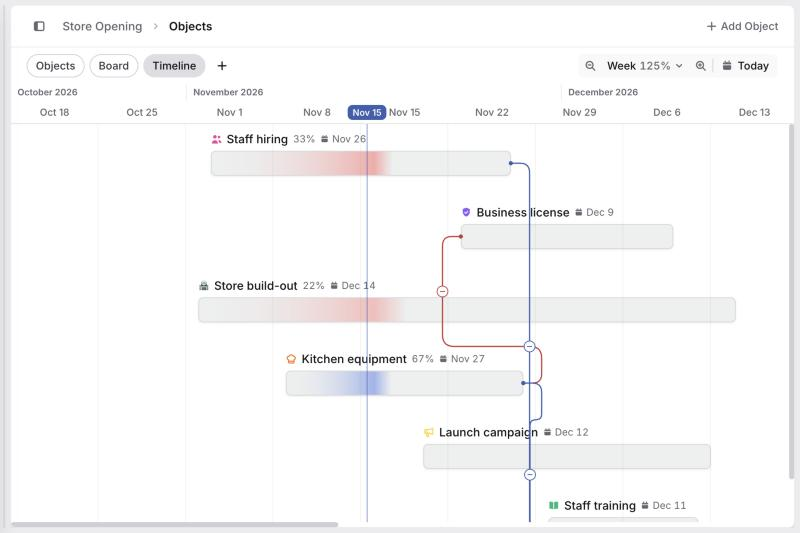
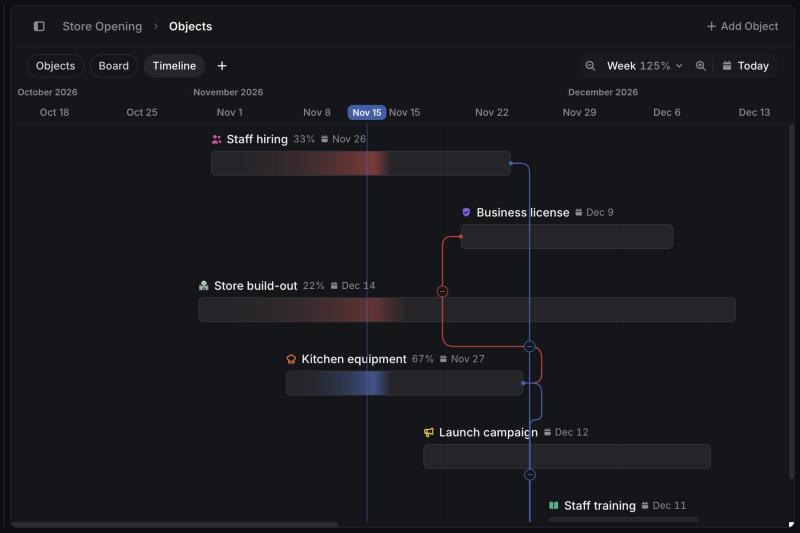
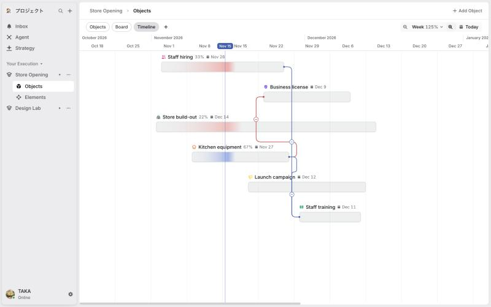
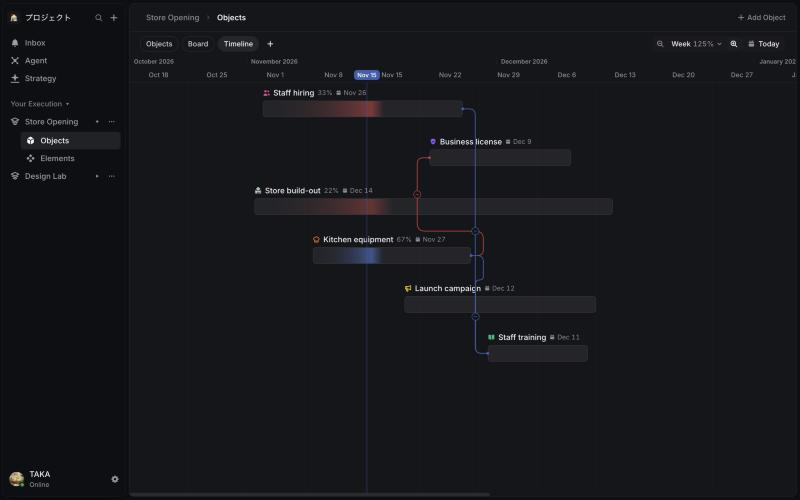

Lay out project schedules and dependencies, with overlapping dates shown in red.
Every team’s projects on one schedule, with the dependencies between them drawn as lines.


What you can check on the Timeline
- Dependencies as lines
- Which project waits on which, at a glance.
- Collisions in red
- Only the dependency whose dates overlap changes colour.
- Progress on every bar
- Percent done and the deadline sit beside each project.
- Zoom by week
- Step in for the detail, out for the quarter.


Check schedule and progress on one screen
- Milestones
- A dated mark on an Object. The diamond fills clockwise by the share of Elements due by that date that are done.
- Progress in color
- Blue when progress is enough for the time left, red from the tip as the margin shrinks, and fully red when late.
- Today’s line
- A vertical line at today’s date.
- Range shown
- Set in settings how many months back and ahead are shown.